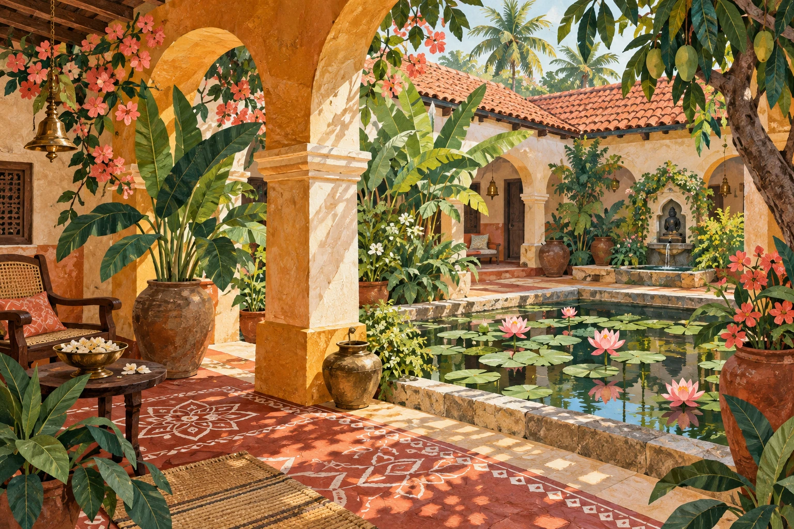
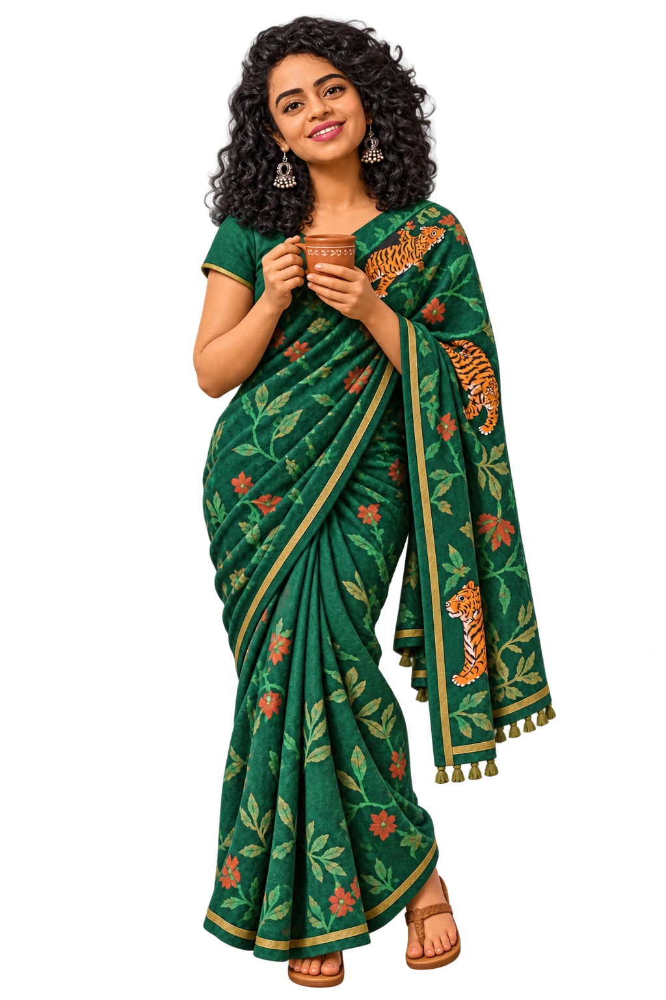

PADMAPRIYA JAMPANA
A little world
of wonder.
Godavari roots. Paint on my hands. A little everyday beauty, made by hand.
Explore my art There’s always room for a little colour.
01 / 04
Scroll through my world.
01 SHINE WITH SHUTTER
For the moments
you want to keep.
The big feelings. The quiet in-between.
People and places, just as they are.
People · Places · Quiet moments
New Jersey · New York · Connecticut
02 ROOTED IN INDIA. MADE BY HAND.
A little soul.
A little gold.
Paint on my hands. Stories in the details.
Indian art is a part of how I see the world.
Old roots.
New stories.
From the richness of Tanjore painting to playful wall art, I love making pieces with a personal connection.
03 THERE’S A PLACE FOR YOU
Good coffee.
Better company.
A cup poured with care. Something warm from the oven. One more chair at the table.

Made with a little extra love.COFFEE ART · BAKING · SLOW GATHERINGS
A recipe for
feeling at home.
Cooking is another kind of making. I share my recipes with One Energy Together, and love the moments that happen around a table.
04 MANY INTERESTS. ONE VERY CURIOUS PERSON.
The art.
The science.
The person.
I’m Padmapriya Jampana. Big data engineer by day, photographer at Shine with Shutter, and part of the One Energy Together family.
I love a good trail, a new recipe, and the kind of light that makes you stop walking. My Indian roots come with me—in my art, my food, and the way I make a place feel like home.
What shall we
make together?
No perfectly formed idea needed. Just a little curiosity.